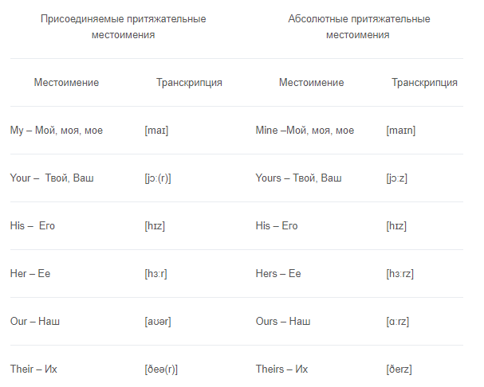
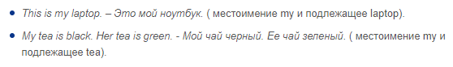
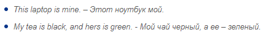
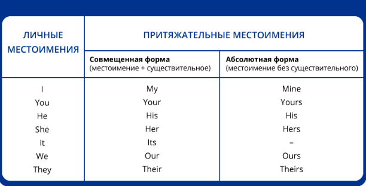

Притяжательные местоимения
Они показывают принадлежность людей, предметов и связь между ними. Притяжательные местоимения в английском могут принимать две формы: присоединяемую и абсолютную.
Их разница заключается в том, что присоединительные местоимения могут употребляться в предложении только с подлежащим. Например:
Как видите, притяжательное присоединительное местоимение всегда стоит перед подлежащим. А абсолютное с легкостью заменяет собой подлежащее. Оно как бы опускается, потому что смысл понятен. То есть после абсолютного притяжательного местоимения ставится точка.
На тех же примерах:
По аналогии можно построить предложение с любыми предметами и местоимениями.
Важно знать! Перечисленные местоимения также могут употребляться в объектном падеже: Me, You, Him, Her, It, Us, Them.
Вот сводная таблица личных и притяжательных местоимений:
